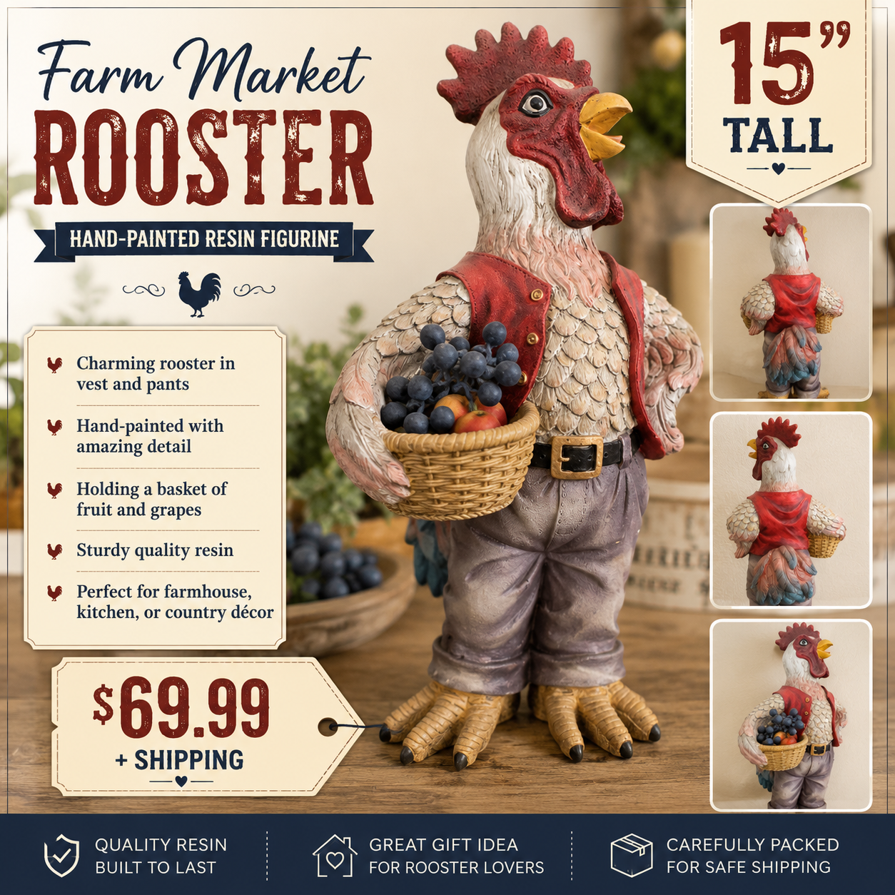
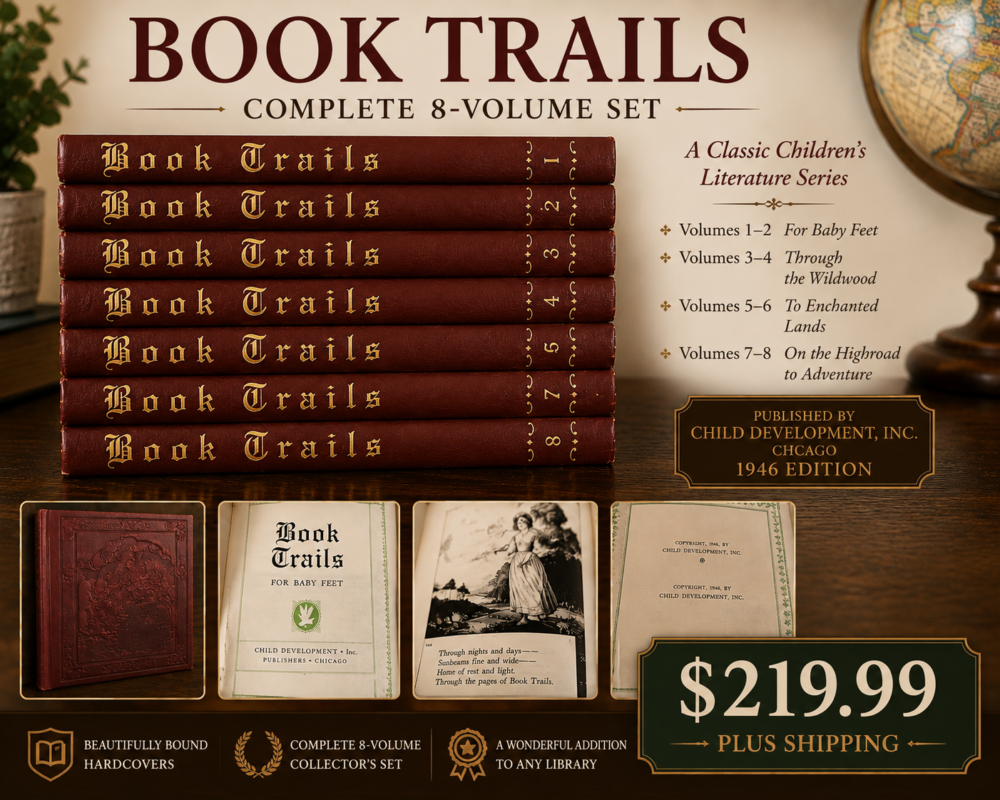
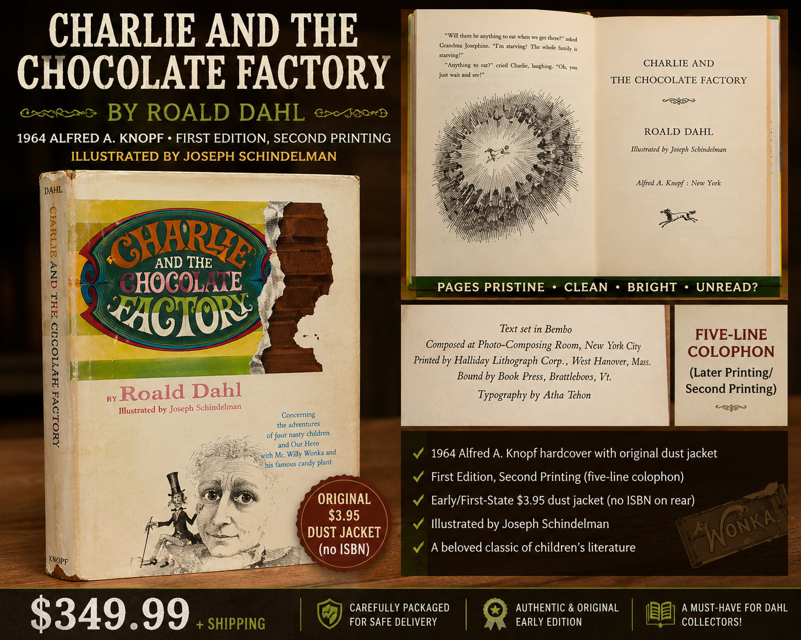
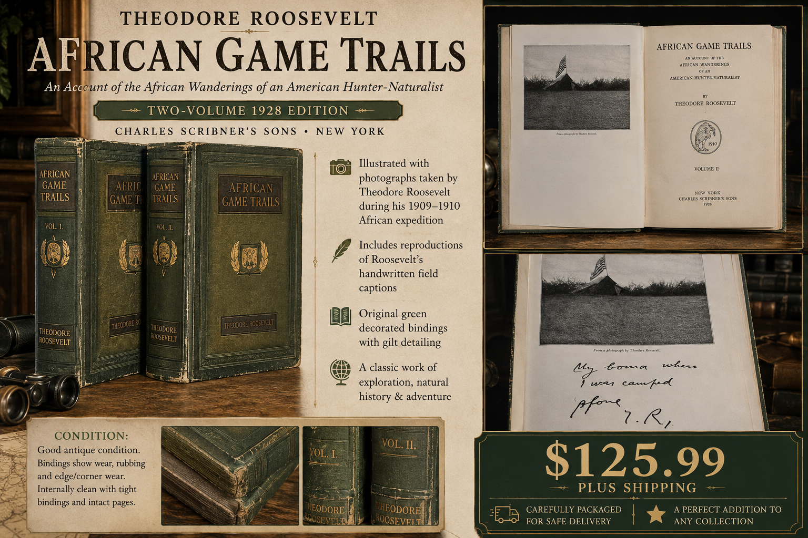
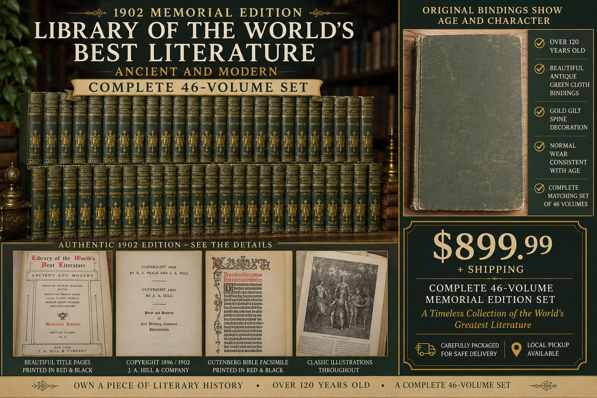

📻 📼 🕹️
80s & Retro
Totally rad finds, neon nostalgia, old-school tech and throwback treasures.
ARDENTE
Secondhand
Shenanigans
Search the categories and preview sections already on the site.
Good Stuff.
Handpicked secondhand treasures with stories to tell and memories waiting to happen.
Totally rad finds, neon nostalgia, old-school tech and throwback treasures.
Furniture, decor, kitchen pieces and useful things ready for another home.
Older pieces with character, history and just enough wear to make them interesting.
Pre-loved clothing, shoes, bags and accessories looking for their next adventure.
Interesting, nostalgic and just-plain-cool things worth another look.
Useful gadgets, retro tech and electronics ready for their next chapter.
Older volumes, historic editions and beautiful bindings with stories that began long before they reached us.
Pre-loved fiction, nonfiction, hardcovers and paperbacks ready for their next reader.
Stephen King, first editions, signed copies, limited editions, author collections and other standout finds.
FARMHOUSE • COUNTRY • CHARACTER
Unique decorative finds with plenty of personality, ready to bring a little secondhand charm to a new home.

Hand-painted resin • Farmhouse & country décor
Large character rooster dressed in a red vest and pants, carrying a woven-look basket filled with fruit and grapes. Detailed feathers, expressive features and a charming farm-market personality make him a standout kitchen or farmhouse accent.
Condition: Pre-owned and in very good displayed condition. Distressed and antiqued coloring appears to be part of the original finish. Please review the listing image for details.
$69.99 + shipping
OLD STORIES • REAL HISTORY
Older books and sets selected for their age, history, bindings and collectible character. Because antique books vary greatly in size and weight, shipping is quoted using the buyer's ZIP code before payment.

Child Development, Inc. • Chicago • 1946 edition
Classic children's literature series including For Baby Feet, Through the Wildwood, To Enchanted Lands and On the Highroad to Adventure. Beautifully bound hardcover collector's set.
Condition: Complete 8-volume vintage set; see listing image for binding and page condition.
$219.99 + quoted shipping
Shipping is calculated from your ZIP code. No payment is collected until the shipping quote is confirmed.
Get Shipping Quote / Purchase
Roald Dahl • Alfred A. Knopf • 1964 • First Edition, Second Printing
Illustrated by Joseph Schindelman. Early hardcover with original $3.95 dust jacket and five-line colophon. No ISBN on rear of jacket.
Condition: Dust jacket shows age and wear; interior pages are exceptionally clean, bright and crisp.
$349.99 + quoted shipping
Shipping is calculated from your ZIP code. No payment is collected until the shipping quote is confirmed.
Get Shipping Quote / Purchase
Theodore Roosevelt • Charles Scribner's Sons • New York • 1928 edition
Illustrated with photographs from Roosevelt's 1909–1910 African expedition, with original green decorated bindings and gilt detailing.
Condition: Good antique condition with expected binding wear, rubbing and edge/corner wear; interiors clean with intact pages.
$125.99 + quoted shipping
Shipping is calculated from your ZIP code. No payment is collected until the shipping quote is confirmed.
Get Shipping Quote / Purchase
Ancient and Modern • 1902 Memorial Edition • Complete 46-Volume Set
J. A. Hill & Company memorial edition with antique green cloth bindings, gold gilt spine decoration, classic illustrations and distinctive title pages.
Condition: Complete matching 46-volume set. Original bindings show normal wear and character consistent with more than 120 years of age.
$899.99 + quoted shipping
This large set may require multiple boxes. Shipping is calculated from your ZIP code, and local pickup is available.
Get Shipping Quote / PurchaseACTUAL SHIPPING • NO GUESSING
Tell us which book you want and where it is going. We will calculate the shipping cost for your ZIP code and send you the total before you pay. Your request does not obligate you to purchase.
Local pickup: Available for oversized sets when arranged in advance.
A NEW READER AWAITS
Good books do not need to be rare to deserve another trip around the bookshelf.
Everyday fiction, nonfiction, hardcovers and paperbacks will live right here as they are added to the treasure pile.
FOR READERS • COLLECTORS • SUPERFANS
Not-your-everyday shelf finds: author collections, unusual editions, first editions, signed books and collectible sets.
J.D. Salinger • Little, Brown and Company • Boston • 1951
Black hardcover with gold lettering and a removable jacket. Copyright information lists 1945, 1946 and 1951. The book contains 277 pages.
Condition: Exceptionally clean copy with crisp pages that appear to have seen very little, if any, reading.
Price to be added from completed appraisal
Multi-book collectible set
A beautiful Colleen Houck collection being sold together as a set.
Condition: Excellent to near-perfect condition.
$119.99 + shipping
Your Stephen King books will have their own spotlight here as each title, edition and condition is verified and added.
TOTALLY RAD TREASURES
If it has big-hair energy, neon attitude, cassette-tape nostalgia or gloriously questionable 1980s style, it belongs in the shenanigans.
WHY THIS EXISTS
Ardente Secondhand Shenanigans is being created as a fun, family-run place for used items that still have plenty of life left in them. Inventory will change as things are found, listed and passed along to their next owner.